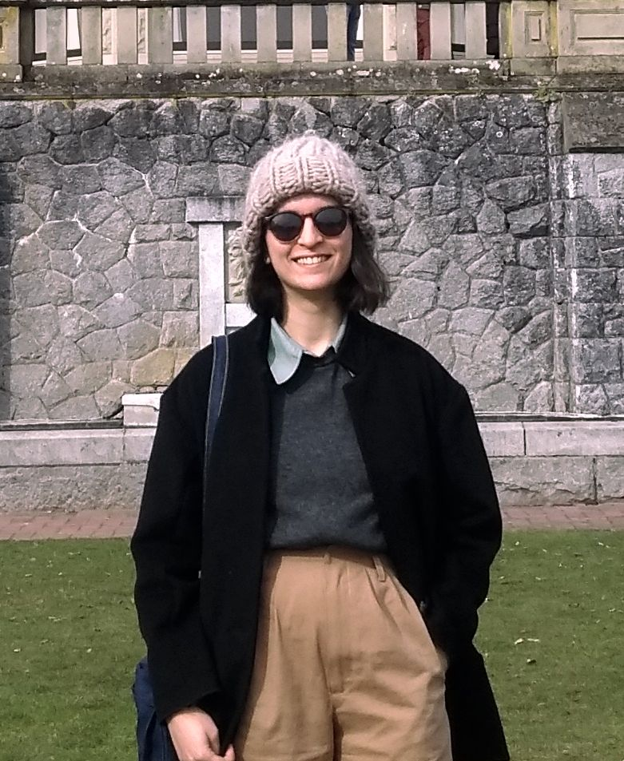

I received an MSc in Computer Science from the University of Toronto, supervised by Yang Xu. I used computational methods to explore euphemism change, including analyzing gender differences in euphemism use using online diachronic corpora. Prior to that, I completed an MSc in Linguistics at the University of Edinburgh.
publications
-
A diachronic evaluation of gender asymmetry in euphemism

LChange 2021 -
Come Together: Integrating Perspective Taking and Perspectival Expressions
CogSci 2021 -
Modelling Cultural Evolution of Pragmatic Communication When Language Co-Develops With Perspective-Taking
EvoLang 2020